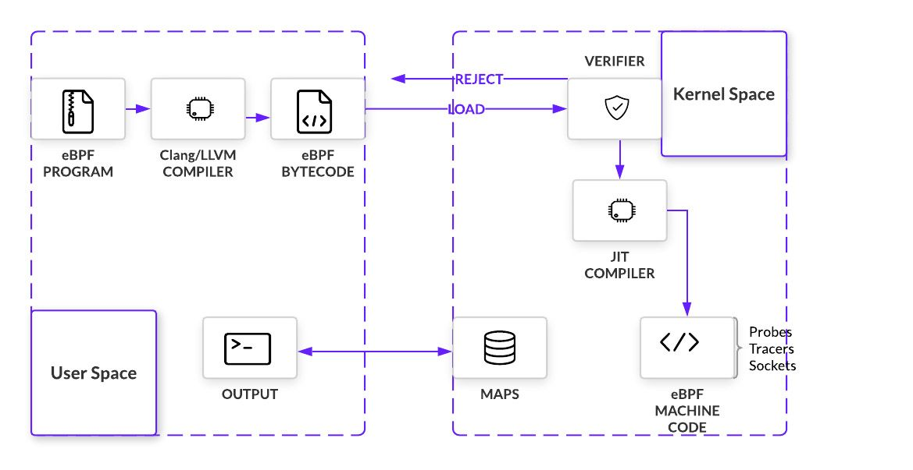

EBPF 介绍
EBPF 这个技术非常非常之强，Linux 操作系统的观测性实在是太强大了，并在 BCC 加持下变得一览无余 但这不是一般的运维人员或是系统管理员可以驾驭的，这个还是要有底层系统知识并有一定开发能力的技术人员才能驾驭的了的
介绍
eBPF extened Berkeley Packet Filter 是一种内核技术，它允许开发人员在不修改内核代码的情况下运行特定的功能
eBPF 的概念源自于 Berkeley Packet Filter（BPF），后者是由贝尔实验室开发的一种网络过滤器，可以捕获和过滤网络数据包 出于对更好的 Linux 跟踪工具的需求，eBPF 从 dtrace中汲取灵感，dtrace 是一种主要用于 Solaris 和 BSD 操作系统的动态跟踪工具
与 dtrace 不同，Linux 无法全面了解正在运行的系统，因为它仅限于系统调用、库调用和函数的特定框架。在Berkeley Packet Filter (BPF)（一种使用内核 VM 编写打包过滤代码的工具）的基础上，一小群工程师开始扩展 BPF 后端以提供与 dtrace 类似的功能集
2014 年 EBPF 随 Linux 3.18 首次限量发布，充分利用 eBPF 至少需要 Linux 4.4 以上版本
eBPF 比起传统的 BPF 来说，传统的 BPF 只能用于网络过滤，而 eBPF 则可以用于更多的应用场景，包括 网络监控 、 安全过滤 和 性能分析 等。另外，eBPF 允许常规用户空间应用程序将要在 Linux 内核中执行的逻辑打包为字节码，当某些事件（称为 挂钩 ）发生时，内核会调用 eBPF 程序。此类挂钩的示例包括系统调用、网络事件等。用于编写和调试 eBPF 程序的最流行的工具链称为 BPF 编译器集合 BCC ，它基于 LLVM 和 CLang
还有一些类似的工具。例如 SystemTap 是一种开源工具，可以帮助用户收集 Linux 内核的运行时数据。它通过动态加载内核模块来实现这一功能，类似于 eBPF 另外，DTrace 是一种动态跟踪和分析工具，可以用于收集系统的运行时数据，类似于 eBPF 和 SystemTap
以下是一个简单的比较表格，可以帮助您更好地了解 eBPF、SystemTap 和 DTrace 这三种工具的不同之处：
| 工具 | eBPF | SystemTap | DTrace |
| 定位 | 内核技术，可用于多种应用场景 | 内核模块 | 动态跟踪和分析工具 |
| 工作原理 | 动态加载和执行无损编译过的代码 | 动态加载内核模块 | 动态插接分析器，通过 probe 获取数据并进行分析 |
| 常见用途 | 网络监控、安全过滤、性能分析等 | 系统性能分析、故障诊断等 | 系统性能分析、故障诊断等 |
| 优点 | 灵活、安全、可用于多种应用场景 | 功能强大、可视化界面 | 功能强大、高性能、支持多种编程语言 |
| 缺点 | 学习曲线高，安全性依赖于编译器的正确性 | 学习曲线高，安全性依赖于内核模块的正确性 | 配置复杂，对系统性能影响较大 |
从上表可以看出，eBPF、SystemTap 和 DTrace 都是非常强大的工具，可以用于收集和分析系统的运行情况
用途
eBPF 是一种非常灵活和强大的内核技术，可以用于多种应用场景。下面是 eBPF 的一些常见用途：
网络监控 ：eBPF 可以用于捕获网络数据包，并执行特定的逻辑来分析网络流量
例如，可以使用 eBPF 程序来监控网络流量，并在发现异常流量时进行警报
安全过滤 ：eBPF 可以用于对网络数据包进行安全过滤
例如，可以使用 eBPF 程序来阻止恶意流量的传播，或者在发现恶意流量时对其进行拦截
性能分析 ：eBPF 可以用于对内核的性能进行分析
例如，可以使用 eBPF 程序来收集内核的性能指标，并通过特定的接口将其可视化 这样，可以更好地了解内核的性能瓶颈，并进行优化
虚拟化 ：eBPF 可以用于虚拟化技术
例如，可以使用 eBPF 程序来收集虚拟机的性能指标，并进行负载均衡 这样，可以更好地利用虚拟化环境的资源，提高系统的性能和稳定性
总之，eBPF 的常见用途非常广泛，可以用于网络监控、安全过滤、性能分析和虚拟化等多种应用场景
原理
eBPF 的工作原理主要分为三个步骤： 加载 、 编译 和 执行 。
- eBPF 需要在内核中运行。这通常是由用户态的应用程序完成的，它会通过 系统调用 来 加载 eBPF 程序 。在加载过程中，内核会将 eBPF 程序的代码复制到内核空间
- eBPF 程序需要经过编译和执行。这通常是由 Clang/LLVM 的编译器完成，然后形成字节码后，将用户态的字节码装载进内核
- Verifier会对要注入内核的程序进行一些内核安全机制的检查,这是为了确保 eBPF 程序不会破坏内核的稳定性和安全性。在检查过程中，内核会对 eBPF 程序的代码进行分析，以确保它不会进行恶意操作，如系统调用、内存访问等
- 如果 eBPF 程序通过了内核安全机制的检查，它就可以在内核中正常运行了，其会通过通过一个 JIT编译步骤 将程序的通用字节码转换为机器特定指令集，以优化程序的执行速度
- Verifier会对要注入内核的程序进行一些内核安全机制的检查,这是为了确保 eBPF 程序不会破坏内核的稳定性和安全性。在检查过程中，内核会对 eBPF 程序的代码进行分析，以确保它不会进行恶意操作，如系统调用、内存访问等
下图是其架构图：

在内核中运行时，eBPF 程序通常会挂载到一个 内核钩子 hook 上，以便在特定的事件发生时被执行。例如，
- 系统调用：当用户空间函数将执行转移到内核时插入
- 函数进入和退出：拦截对预先存在的函数的调用
- 网络事件：在收到数据包时执行
- Kprobes 和 uprobes：附加到内核或用户函数的探测器
最后是 eBPF Maps ，允许eBPF程序在调用之间保持状态，以便进行相关的数据统计，并与用户空间的应用程序共享数据。一个eBPF映射基本上是一个 键值存储 ，其中的值通常被视为任意数据的二进制块
- 它们是通过带有 BPF_MAP_CREATE 参数 的 bpf_cmd 系统调用 来创建的
- 和Linux世界中的其他东西一样，它们是通过 文件描述符 来 寻址
与Map的交互是通过 查找/更新/删除 系统调用进行的
总之，eBPF 的工作原理是通过动态加载、执行和检查无损编译过的代码来实现的
示例
首先是一个基于 eBPF 的性能分析的一步步示例：
准备工作：首先，需要确保内核已经支持 eBPF 功能。这通常需要在内核配置文件中启用 eBPF 相关的选项，并重新编译内核。检查是否支持 eBPF，可以用这两个命令查看
ls /sys/fs/bpf lsmod | grep bpf
写 eBPF 程序：需要编写 eBPF 程序，用于收集内核的性能指标。eBPF 程序的语言可以选择 C 或者 Python，它需要通过特定的接口访问内核的数据结构，并将收集到的数据保存到指定的位置。下面是一个Python 示例（其实还是C语言，用python来加载一段C程序到Linux内核）
#!/usr/bin/python3 from bcc import BPF from time import sleep # 定义 eBPF 程序 bpf_text = """ #include <uapi/linux/ptrace.h> BPF_HASH(stats, u32); int count(struct pt_regs *ctx) { u32 key = 0; u64 *val, zero=0; val = stats.lookup_or_init(&key, &zero); (*val)++; return 0; } """ # 编译 eBPF 程序 b = BPF(text=bpf_text, cflags=["-Wno-macro-redefined"]) # 加载 eBPF 程序 b.attach_kprobe(event="tcp_sendmsg", fn_name="count") name = { 0: "tcp_sendmsg" } # 输出统计结果 while True: try: #print("Total packets: %d" % b["stats"][0].value) for k, v in b["stats"].items(): print("{}: {}".format(name[k.value], v.value)) sleep(1) except KeyboardInterrupt: exit()
这个 eBPF 程序的功能是统计网络中传输的数据包数量 它通过定义一个 BPF_HASH 数据结构来保存统计结果（eBPF Maps），并通过捕获 tcp_sendmsg 事件来实现实时统计 最后，它通过每秒输出一次统计结果来展示数据 这个 eBPF 程序只是一个简单的示例，实际应用中可能需要进行更复杂的统计和分析
运行 eBPF 程序：需要使用 eBPF 编译器将 eBPF 程序编译成内核可执行的格式
这个在上面的Python程序里可以看到：Python引入了一个bcc的包，然后用这个包，把那段 C语言的程序编译成字节码加载在内核中并把某个函数 attach 到某个事件上 这个过程可以使用 BPF Compiler Collection（BCC）工具来完成：BCC 工具可以通过命令行的方式将 eBPF 程序编译成内核可执行的格式，并将其加载到内核中
下面是运行上面的 Python3 程序的步骤：
sudo apt install python3-bpfcc
注：在Python3下请不要使用 pip3 install bcc
如果是 Ubuntu 20.10 以上的版本，最好通过源码安装（否则程序会有编译问题）：
apt purge bpfcc-tools libbpfcc python3-bpfcc wget https://github.com/iovisor/bcc/releases/download/v0.25.0/bcc-src-with-submodule.tar.gz tar xf bcc-src-with-submodule.tar.gz cd bcc/ apt install -y python-is-python3 apt install -y bison build-essential cmake flex git libedit-dev libllvm11 llvm-11-dev libclang-11-dev zlib1g-dev libelf-dev libfl-dev python3-distutils apt install -y checkinstall mkdir build cd build/ cmake -DCMAKE_INSTALL_PREFIX=/usr -DPYTHON_CMD=python3 .. make checkinstall
接下来，需要将上面的 Python 程序保存到本地，例如保存到文件 netstat.py。运行程序：最后，可以通过执行以下命令来运行 Python 程序：
$ chmod +x ./netstat.py $ sudo ./netstat.py tcp_sendmsg: 29 tcp_sendmsg: 216 tcp_sendmsg: 277 tcp_sendmsg: 379 tcp_sendmsg: 419 tcp_sendmsg: 468 tcp_sendmsg: 574 tcp_sendmsg: 645 tcp_sendmsg: 29
程序开始运行后，会在控制台输出网络数据包的统计信息。可以通过按 Ctrl+C 组合键来结束程序的运行
下面再看一个比较复杂的示例，这个示例会计算TCP的发包时间：
#!/usr/bin/python3 from bcc import BPF import time # 定义 eBPF 程序 bpf_text = """ #include <uapi/linux/ptrace.h> #include <net/sock.h> #include <net/inet_sock.h> #include <bcc/proto.h> struct packet_t { u64 ts, size; u32 pid; u32 saddr, daddr; u16 sport, dport; }; BPF_HASH(packets, u64, struct packet_t); int on_send(struct pt_regs *ctx, struct sock *sk, struct msghdr *msg, size_t size) { u64 id = bpf_get_current_pid_tgid(); u32 pid = id; // 记录数据包的时间戳和信息 struct packet_t pkt = {}; // 结构体一定要初始化，可以使用下面的方法 //__builtin_memset(&pkt, 0, sizeof(pkt)); pkt.ts = bpf_ktime_get_ns(); pkt.size = size; pkt.pid = pid; pkt.saddr = sk->__sk_common.skc_rcv_saddr; pkt.daddr = sk->__sk_common.skc_daddr; struct inet_sock *sockp = (struct inet_sock *)sk; pkt.sport = sockp->inet_sport; pkt.dport = sk->__sk_common.skc_dport; packets.update(&id, &pkt); return 0; } int on_recv(struct pt_regs *ctx, struct sock *sk) { u64 id = bpf_get_current_pid_tgid(); u32 pid = id; // 获取数据包的时间戳和编号 struct packet_t *pkt = packets.lookup(&id); if (!pkt) { return 0; } // 计算传输时间 u64 delta = bpf_ktime_get_ns() - pkt->ts; // 统计结果 bpf_trace_printk("tcp_time: %llu.%llums, size: %llu\\n", delta/1000, delta%1000%100, pkt->size); // 删除统计结果 packets.delete(&id); return 0; } """ # 编译 eBPF 程序 b = BPF(text=bpf_text, cflags=["-Wno-macro-redefined"]) # 注册 eBPF 程序 b.attach_kprobe(event="tcp_sendmsg", fn_name="on_send") b.attach_kprobe(event="tcp_v4_do_rcv", fn_name="on_recv") # 输出统计信息 print("Tracing TCP latency... Hit Ctrl-C to end.") while True: try: (task, pid, cpu, flags, ts, msg) = b.trace_fields() print("%-18.9f %-16s %-6d %s" % (ts, task, pid, msg)) except KeyboardInterrupt: exit()
上面这个程序通过捕获每个数据包的时间戳来统计传输时间 在捕获 tcp_sendmsg 事件时，记录数据包的发送时间；在捕获 tcp_v4_do_rcv 事件时，记录数据包的接收时间 最后，通过比较两个时间戳来计算传输时间
从上面的两个程序我们可以看到，eBPF 的一个编程的基本方法，这样的在Python里向内核的某些事件挂载一段 “C语言” 的方式就是 eBPF 的编程方式
实话实说，这样的代码很不好写，而且有很多非常诡异的东西，一般人是很难驾驭的 好在这样的代码已经有人写了，很多不必再写了，在 Github 上的 bcc 库下的 tools 目录有很多
BCC
BCC BPF Compiler Collection 是一套开源的工具集，可以在 Linux 系统中使用 BPF Berkeley Packet Filter 程序进行系统级性能分析和监测。BCC 包含了许多实用工具，如：
- bcc-tools：一个包含许多常用的 BCC 工具的软件包
- bpftrace：一个高级语言，用于编写和执行 BPF 程序
- tcptop：一个实时监控和分析 TCP 流量的工具
- execsnoop：一个用于监控进程执行情况的工具
- filetop：一个实时监控和分析文件系统流量的工具
- trace：一个用于跟踪和分析函数调用的工具
- funccount：一个用于统计函数调用次数的工具
- opensnoop：一个用于监控文件打开操作的工具
- pidstat：一个用于监控进程性能的工具
- profile：一个用于分析系统 CPU 使用情况的工具